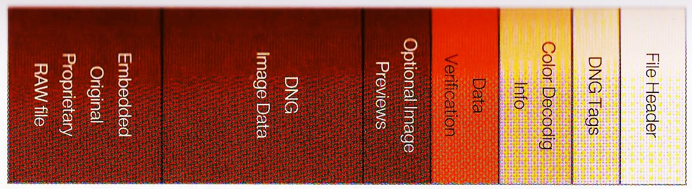
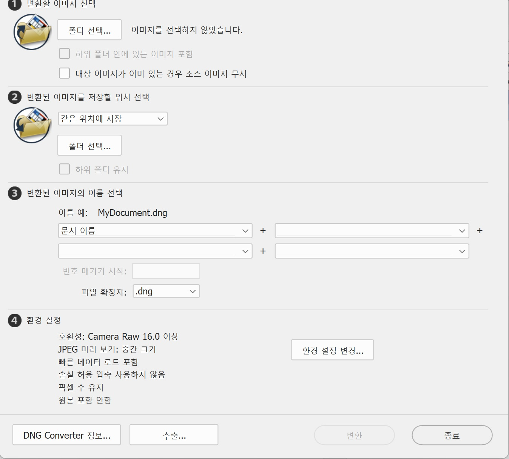

DNG파일은 디지털사진을 위해 어도비(Adobe)사에서 고안한 디지털 네거티브(Digital NeGative)파일이다. 필름의 원판을 네거티브라 하듯이 디지털사진의 원판이라는 뜻을 가진 파일로 TIFF 파일에 기반을 두고 있다. DNG파일은 수많은 RAW 파일과의 호환성을 높인 이른바 범용 RAW 형식으로, RAW 파일을 지원하지 않는 카메라를 위해 만들어 졌다. 하지만 카메라 제조사들이 자사의 RAW 파일을 고집하는 경향이 있어 아직까지는 디지털 카메라의 이미지 저장 형식으로는 널리 사용되지 않고 있다. 사용자는 어도비에서 제공하는 DNG 컨버터를 이용해 DNG파일을 만들 수 있으며, 포토샵이나 라이트룸을 이용하여 RAW 파일을 DNG파일로 변환하여 저장할 수 있다.
DNG파일의 데이터 구조DNG 이미지 파일 형식의 특징은 ACR(Adobe Camera Raw) 프로필과 미리보기 이미지를 포함하는 것이다. 또한 옵션으로 DNG로 변환된 원본 RAW 파일을 포함할 수 있다.
[DNG 파일 구조]
DNG 컨버터최근 출시된 일부 디지털 카메라는 DNG파일 형식을 일부 지원한다. 만약 사용자의 카메라가 DNG파일을 지원하지 않거나, 오래 전에 찍은 RAW 파일을 갖고 있다면 이를 DNG파일로 변환할 수 있다. 어도비 사이트(http://www.adobe.com/downloads/)에서 제공하는 DNG 컨버터(DNG Converter)프로그램을 무료로 다운 받아 사용하면 된다.
[DNG 컨버터(DNG Converter)프로그램]
[참고문헌]
[1]프로페셔널 사진의 조건/라이트룸5, 백종수, 이지스퍼블리싱, 2013.11.14.
....
....
....
....
....
....